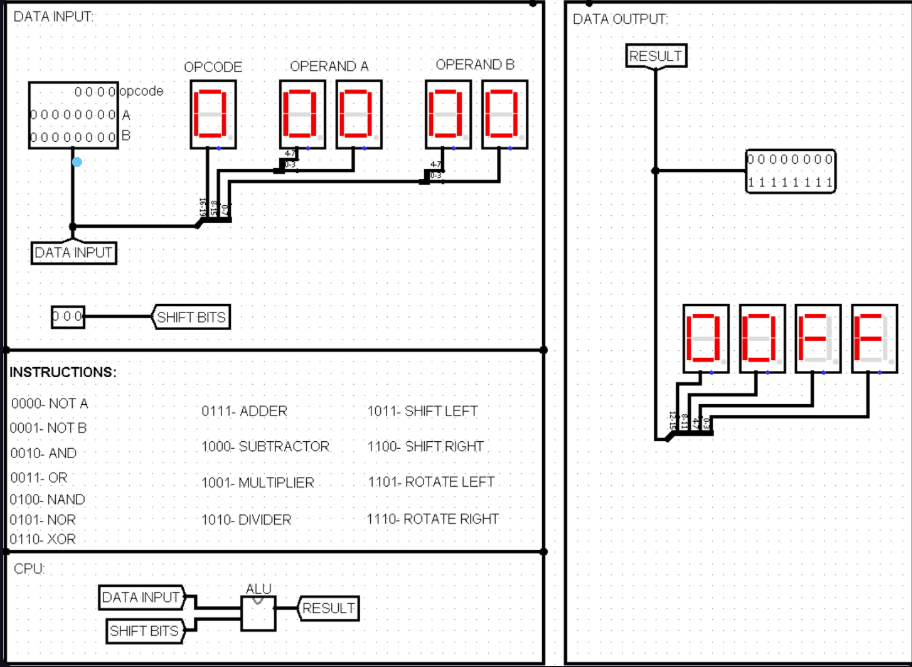

Circuit Diagram


ALU:
The ALU (Arithmetic Logic Unit) is a digital circuit that performs arithmetic and logical operations on data. It's a crucial component of a computer's processor, responsible for executing arithmetic and bitwise operations on integer binary numbers.
The inputs to an ALU are the data to be operated on, called operands, and a code indicating the operation to be performed.
N-bit ALU describes an ALU that can operate on operands of size 'n' bits.
Some popular ALUs are 4-bit ALU, 8-bit ALU, 16-bit ALU, 32-bit ALU, etc.
The following 8-bit ALU operates on 8-bit operands and can perform logical operations involving gates such as AND, OR, NOT, XOR, NAND, and NOR. Arithmetic operations are taken out by Adder, Subtractor, Multiplier, and Divider. The following ALU is also capable of shift operations such as left shift, right shift, left rotate, and right rotate.
Hex displays and tunnels provide a clean and smooth user interface and understanding.